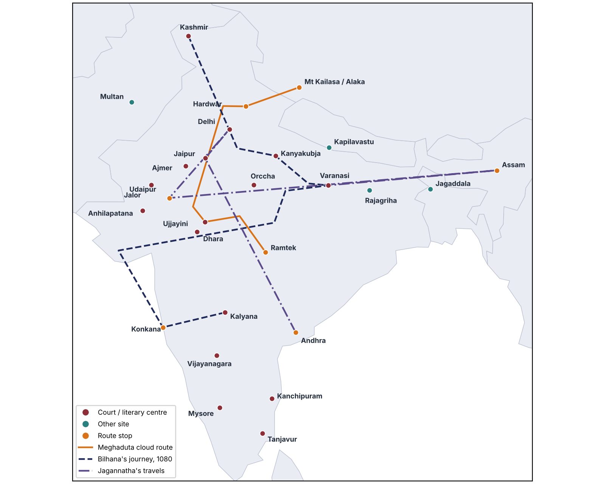

Read the chapter story in order. Use Next to travel through it; the globe follows the story.
Story locations · click a dot to read

Loading 3D globe…
Places in this story
This visualisation follows the journeys and cultural centres discussed in the chapter. The 114 plotted stops are an interpretive guide, not an archaeological survey.